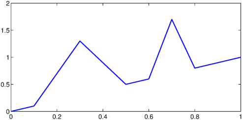
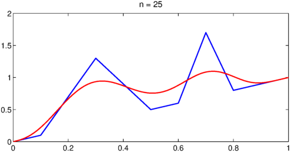
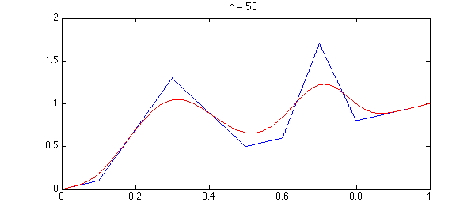
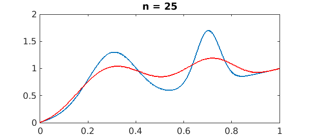
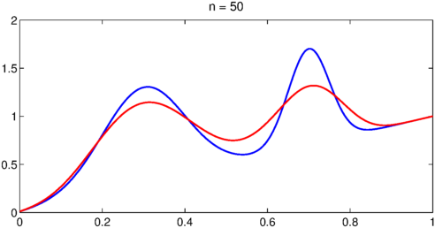
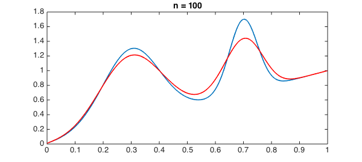

function BernsteinPolys()
The Weierstrass Approximation Theorem asserts that a continuous function $f$ on a bounded interval like $[0,1]$ can be approximated by polynomials (i.e., approximated as closely as you like in the supremum norm). Weierstrass proved this in 1885 by a diffusion argument: if $f$ diffuses however little, it becomes an entire function, which can be approximated by truncating the Taylor series. (Before the diffusion, one first extends $f$ to a continuous with compact support on the whole real line.)
Bernstein gave a proof of the Weierstrass Approximation Theorem in 1912 that is a kind of discrete version of this diffusion proof: it replaces the continuous diffusion by a random walk on an equispaced grid in $[0,1]$. While this is perhaps a little more complicated conceptually, it is mathematically more elementary since you don't need any analysis and you don't need to truncate a series, for the polynomials emerge directly.
Specifically, for each positive integer $n$, the degree $n$ Bernstein polynomial for $f$ is $$ B_n(x) = \sum_{k=0}^n f(k/n) {n\choose k} x^k (1-x)^{n-k}. $$ Note that this is basically a binomial expansion. The formula tells us that to evaluate $B_n(x)$, we can imagine a biased coin that comes up heads with probability $x$ and tails with probability $1-x$. $B_n(x)$ is the expected result that you'll get if you start at $x=0$ and toss the coin $n$ times, moving right on the grid if you get a heads, and evaluate $f$ when you finish tossing.
Let's demonstrate in Chebfun. Here is a continuous function on [0,1]:
LW = 'linewidth'; lw = 1.6;
s = chebfun('s',[0 1]);
f = min(abs(s-.3),2*abs(s-.7));
f = s + max(0,1-5*f);
hold off, plot(f,LW,lw)

Since $B_n$ is a polynomial of degree $n$, we can construct it by evaluating it on a grid of $n+1$ points and then interpolating. For stability these should be Chebyshev points, not equispaced. Here is an elementary code to do this at least for small values of $n$. Note that it isn't really stable, so it turns warnings off.
function Bn = Bn(f,n) warning off x = chebpts(n+1,[0 1]); Bndata = zeros(size(x)); for k = 0:n Bndata = Bndata + f(k/n)*nchoosek(n,k).*x.^k.*(1-x).^(n-k); end Bn = chebfun(Bndata,[0 1]); warning on end
To illustrate the behavior of Bernstein polynomials, here we see slow convergence as $n$ increases.
for n = [25 50 100] hold off, plot(f,LW,lw) hold on, plot(Bn(f,n),'r',LW,lw) title(['n = ' int2str(n)],'fontsize',14) snapnow end



Note a signature feature of Bernstein polynomial approximations, their monotonicity in various senses. There is never any Gibbs phenomenon.
On the other hand, since these approximations depend on the central limit theorem to give accuracy as $n$ gets large, they take no advantage at all of smoothness. Here for example is a repetition of the last experiment for a far smoother function.
f = s + exp(-50*(s-.3).^2) + exp(-200*(s-.7).^2); for n = [25 50 100] hold off, plot(f,LW,lw) hold on, plot(Bn(f,n),'r',LW,lw) title(['n = ' int2str(n)],'fontsize',14) snapnow end



Though $f$ is now entire, the convergence is not really better than before. By contrast we know that $n=100$ is more than enough for Chebyshev interpolation to nail this function to machine precision:
length(f)
ans =
85
end